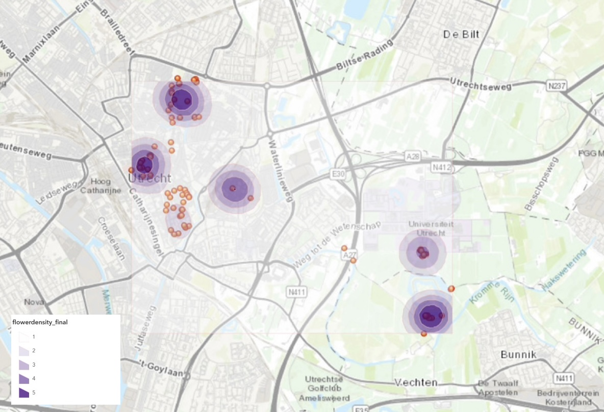

Vector Spatial Analysis


Vector spatial analysis analyzes geographic data represented as points, lines, and polygons in order to understand spatial relationships and patterns. For this assignment, my peers and I collected data from around the city of Utrecht. My field work group and I focused on gathering data about flower types and density in the city, using the Field Maps application to add points to the map. My group gathered data from around Amelisweerd (forest area, closer to nature), while the rest of the students collected data from more central areas in the city. I used ArcGIS Online tools to run analyses on the collected data. The maps that were produced can be seen below (fig. 1 & 2).I used the "Calculate Density" tool to visualize areas with higher concentrations of flowers (fig. 1). This helped identify hotspots where flower diversity or abundance was greatest. The density analysis shows a higher concentration of flower observations in the city center. This reflects the fact that more groups chose to collect data in urban areas. Although my group focused on a forest area and observed high flower density locally, this doesn’t register as strongly on the overall map due to fewer total data points collected there. This highlights how sampling bias can influence spatial analysis results and why consistent sampling methods across study areas are important.I used the "Summarize Within" tool to count flower observations within neighborhood boundaries (fig. 2). This allowed me to compare different areas of the city in terms of observed flower presence. Although my group focused on a forest area, this step helps show how different urban zones contributed to the dataset.
Fig 1: Density.
Fig 2: Summarize Within.